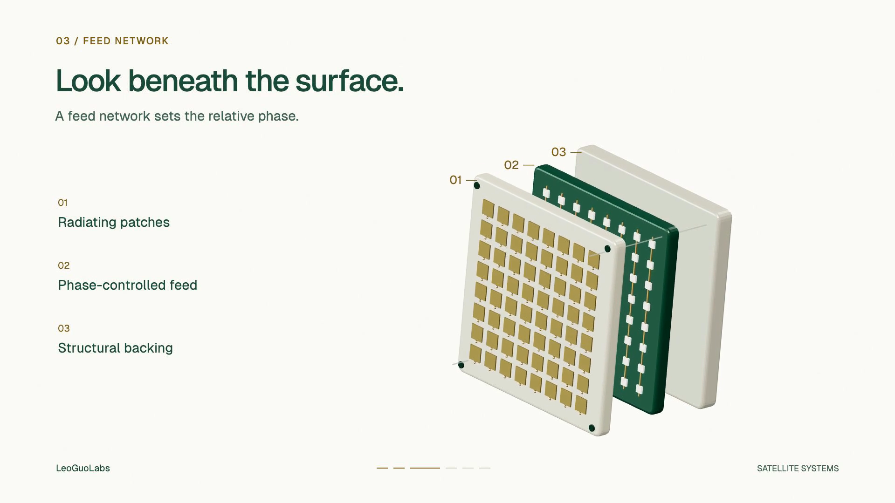
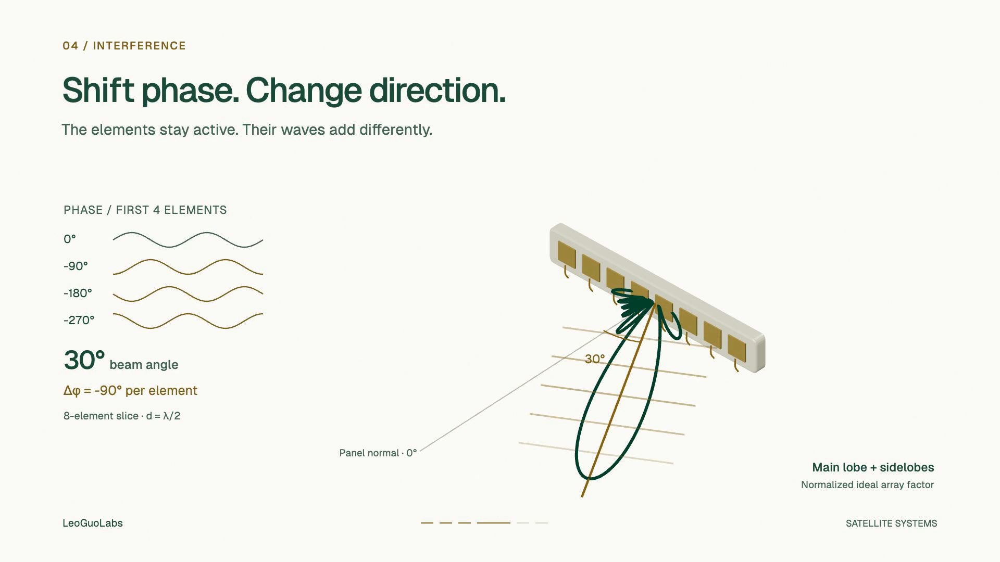

Steering without turning · 36 seconds · 1920 × 1080 · 60 fpsMy first Codex motion experiment followed a gold packet through a network. A connection broke, an alternate route opened, and the packet reached its destination. React and SVG, rendered through Remotion, were enough to tell that story in 24 seconds.
The next experiment needed a different visual language. I wanted to explain how a satellite antenna changes its pointing direction while its panel stays fixed to the spacecraft. The viewer needed to see a physical assembly, move into its structure, understand a change in phase, and return to the satellite with that mechanism in mind.
The result is Steering without turning: a 36-second, six-shot sample built with Three.js, React Three Fiber, and Remotion. The useful improvement is the connection between the camera, the mechanism, and the numbers on screen.
Study what the reference actually does
Before building the satellite sequence, I examined a longer semiconductor explainer. Its strongest device was a repeated change of scale: establish an object, enter the relevant structure, show how that structure works, then pull back to its consequence.
A phone leads into a chip. A close view of a filament and electrodes leads back to the enclosing tube. A component's input, internal state, and output share a frame. Later, individual devices become arrays and larger systems. The camera gives the explanation a physical address.
That was the gap in the routing film. Its topology was clear, and its motion was repeatable, but most of the explanation lived at one distance from one flat diagram. Adding more animated decorations would have left that gap intact.
The reference review combined two kinds of evidence. An automated pass decoded all 12,543 frames of the 720p analysis copy and recorded frame differences, brightness, edge density, and corresponding audio-window measurements. Visual review covered 67 distinct sampled frames, including denser samples around mechanisms and transitions; four of those were also checked against the 1080p copy. Those counts describe different work; they do not mean someone manually inspected 12,543 still images.
One useful example was the cut between frames 499 and 500: the image moved from a dense chip surface into larger internal connections. A different sequence kept an input waveform, a device, and its output visible together. Both informed the new film. The large brightness jumps elsewhere in the reference did not become a requirement for the satellite sequence.
The transferable lesson was to make each change of scale explain something. The finished reference alone could not establish which software its creator used.
Give the film one causal chain
The new brief reduced the subject to this sequence:
Changing geometry → radiating elements → relative phase → a changed main-beam direction → pointing at a terminal.
That is a manageable job for 36 seconds. It leaves link budgets, Doppler compensation, scheduling, and handover for other explanations.
The six scenes each occupy six seconds, or 360 frames at 60 fps:
| Time | Camera and action | What the viewer should learn |
|---|
| 0–6 s | Establish the spacecraft, solar wings, and planar aperture | Locate the antenna on the satellite |
| 6–12 s | Move into the aperture | Recognize the repeated radiating elements |
| 12–18 s | Separate the aperture, feed layer, and backing | Locate the simplified phase-control structure |
| 18–24 s | Change an eight-element phase ramp and its array factor | Connect relative phase with beam direction |
| 24–30 s | Move the spacecraft above a fixed terminal | See why electronic pointing is useful |
| 30–36 s | Return to the complete spacecraft | Reconnect the mechanism with the system |
The exploded assembly is conceptual. Its purpose is to make the layers readable, not to reproduce a commercial antenna's CAD model. The spacecraft dimensions, travel speed, and ground geometry are also illustrative.
Choose the renderer for the explanation
Three.js supplies the geometry, materials, lights, and camera. React Three Fiber expresses that scene as React components. Remotion supplies the frame number, composition, audio placement, and video render. Its Three.js integration connects these parts through ThreeCanvas.
This combination fits a short technical explainer because its objects and measurements can share ordinary code. The camera can move around an aperture with actual thickness; the same aperture can separate into layers; and a computed pattern can occupy the same scene. Text remains an HTML overlay, while the phase traces use SVG, keeping labels sharp and editable.
The satellite is assembled from procedural parts: a bevelled body, radiating patches, feed traces, mounting details, and repeated solar cells. Reusing the same geometry across shots preserves recognizable features as the scale changes.
The visual identity remains warm ivory, forest green, restrained gold, and Geist typography. Lighting makes surfaces and depth readable. The design does not depend on a dark background to make the spacecraft feel technical.
This is a choice for this project, rather than a ranking of every animation tool. A detailed production spacecraft or a longer cinematic sequence would bring different modelling and rendering requirements.

The same aperture is reused across the spacecraft, macro and exploded views.Make every frame reproducible
The composition contains 2,160 frames. Its state is derived from the requested frame index:
shot = floor(frame / 360)
localTime = (frame - shot × 360) / 60
Camera positions, zoom, layer separation, phase, and pointing are functions of that local time. Smooth ramps provide the acceleration and settling. There is no accumulated animation state that depends on how many earlier frames happened to render.
This matters during revision. Rendering frame 1,320 directly should produce the same phase state as reaching it during a complete export. It also makes it possible to check a mechanism across its full interval without playing the composition in real time.
The source separates reusable geometry in Models.tsx, timing and equations in motion.ts, and scene composition in Film.tsx. A camera change therefore does not require rewriting the antenna equation.
Let the numbers and the picture share a cause
The central shot uses an ideal, equal-amplitude, eight-element linear array with half-wavelength spacing. All eight elements remain active. Steering comes from their relative phase; they do not take turns transmitting.
For this project's sign convention, the array lies along +x, its normal is +z, and positive steering angles lean toward +x. With a time phasor of exp(+iωt) and outgoing propagation of exp(−ikr), the adjacent feed-phase step is:
Δφ = −2π(d/λ) sin(θ₀)
At d = λ/2, steering to +30° requires a −90° phase step between adjacent elements. Stating the convention matters: changing the coordinate or phasor convention can change the written sign without changing the physical principle.
The plotted normalized array factor is computed from the same steering angle:
AF(θ) = |Σ exp(i n k d [sin(θ) − sin(θ₀)])| / N
n = 0 … N−1
The phase traces, phase-step readout, beam-angle readout, wavefront orientation, and main-lobe direction all follow that state. The path-difference explanation and the distinction between an element pattern and an array factor are described in Analog Devices' phased-array tutorial.
A numerical check evaluates every frame of the six-second phase scene. Scanning the pattern at 0.1-degree increments puts its maximum within 0.05 degrees of the commanded direction. A separate check evaluates every tracking frame against the line from the antenna to the fixed terminal.
These tests establish internal consistency. They do not validate a radio link. The pattern retains sidelobes, and the narrowband model omits element patterns, coupling, losses, polarization, and beam squint. Practical arrays also have scan limits; Analog Devices' second tutorial explains several of those constraints. The visible beam and slowed wavefronts are explanatory graphics.

One steering angle drives the phase traces, wavefront orientation and normalized pattern.Build sound around the same six scenes
The original score is synthesized in Python and NumPy at 48 kHz stereo. A 100 BPM pulse puts ten beats inside each six-second scene. A small recurring melodic figure ties the sections together, while short cues mark the aperture close-up, layer separation, phase change, tracking view, and return.
The source WAV measures −20.16 LUFS integrated with a −5.00 dBTP true peak, leaving headroom for mastering. Those are source-file measurements, not measurements of the encoded MP4.
There is no narration in this sample. Short captions and the mechanism carry the explanation when muted. The synthesized sounds provide editorial rhythm; they are not recordings of radio waves or hardware operating in space.
Fix the defects the render reveals
The first stills exposed two concrete problems.
Some aperture patches were partly buried in the bevelled panel surface. Increasing brightness would not have repaired the geometry. Moving the patches and feed traces forward in local z made the intended surfaces visible.
The first macro framing also brought the full spacecraft's solar wings across the title and sidebar. That shot became a dedicated aperture close-up, preserving the panel's angle and repeated patches as the visual connection to the establishing shot. The tracking scene then moved lower and used less camera zoom to give its heading enough space. A further geometry review caught a ground terminal floating above the sphere; the surface was moved into contact with its base. Projected layer numbers and an angle arc made the labels refer to specific geometry, and a short hold at exactly 30° kept the final phase readouts consistent.
These revisions came from rendered images. Source-level correctness did not guarantee a readable composition. Representative stills made the problems inexpensive to find before the full render.
Treat the exported file as the deliverable
The final check needs several kinds of evidence: representative full-size frames for layout, nearby frames for motion, numerical checks for the mechanism, and a complete decode for the exported streams. Browser playback and seeking establish a different property again: whether the actual delivery file works in a player.
The mastered file is 1920 × 1080 at 60 fps, with exactly 2,160 decoded video frames over 36.000 seconds. It uses H.264 with 4:2:0 sampling and limited-range BT.709 color, plus 48 kHz stereo AAC. Measurement of that MP4 gives −18.00 LUFS integrated and −2.86 dBTP true peak. It played from the beginning to the ended state in the browser with no reported media error. The review page also supports frame seeking. The successful render took 63.95 seconds and mastering took 8.23 seconds on this machine; those timings exclude research, coding, image review, and revisions.
The reproducible project keeps the brief, source, deterministic score, rendering scripts, review evidence, and iteration notes together. From the project directory, the main steps are:
npm ci
python3 scripts/soundtrack.py
npm run check
npm run stills
npm run render
npm run master
The Python step requires NumPy. A compatible Node.js runtime and the browser used by Remotion are also part of the environment; dependency versions are recorded in the lockfile.
For another technical subject, this is the prompt I would reuse:
Build a short explainer around one causal mechanism. First write a director brief and a six-shot map: establish the object, enter its structure, expose the mechanism, show a controlled change, show its consequence, and return to the object. Choose the renderer for those shots. Drive camera motion, geometry, labels, and sound from explicit frame-based timing. Derive numerical readouts and visual behavior from the same model. Render stills early, record specific defects, and revise them. Deliver the actual video, editable source, and evidence of the checks performed. Separate an illustrative model from measured hardware performance.
The next improvement would start with the same question that shaped this revision: which part of the explanation still requires the viewer to imagine a connection that the film could show?